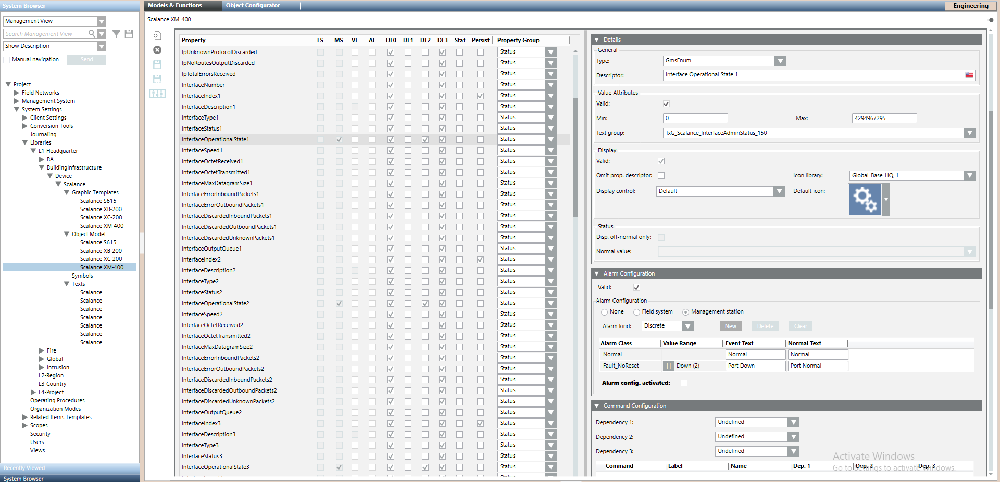

Enable Events at Object Model Level for All the Scalance Devices
Use this method to modify the alarm configuration for all the Scalance devices that are based on a specific object model.
- You are trained and authorized to work with system libraries at the target customization level where you want to enable events.
- Select Project > System Settings > Libraries > L1-Headquarter > Building Infrastructure > Device > Scalance > Object Model > [device object model] among the following:
- GMS_SNMP_Scalance_S615_150
- GMS_SNMP_Scalance_XB-200_150
- GMS_SNMP_Scalance_XB-208_150
- GMS_SNMP_Scalance_XC-200_150
- GMS_SNMP_Scalance_XC-224_150
- GMS_SNMP_Scalance_XM-400_150
- In the Models & Functions tab, click Customize
 .
.
NOTE: This icon is unavailable if the selected object model is already customized. In this case, skip to step 4. - Click OK.
- The selected object model is cloned in the corresponding position within the structure of the customized library, at the allowed customization level.
- Select the customized object model. For example, Project > System Settings > Libraries > L4-Project > Building Infrastructure > Device > Scalance > Object Model > [device object model].
- In the Models & Functions tab, close the Main expander and open the Properties expander.
- In the list on the left, select the Property for which you want to enable the event. For example:
- SystemStatus
- InterfaceOperationalState1
- InterfaceOperationalState2
- InterfaceOperationalState3
- InterfaceOperationalState4
- InterfaceOperationalState5
- InterfaceOperationalState6
- InterfaceOperationalState7
- InterfaceOperationalState8
- InterfaceOperationalStateAdditional1
- InterfaceOperationalStateAdditional2
- InterfaceOperationalStateAdditional3
- InterfaceOperationalStateAdditional4
- SpanningTreeEdgeOperationalState1
- SpanningTreeEdgeOperationalState2
- SpanningTreeEdgeOperationalState3
- SpanningTreeEdgeOperationalState4
- SpanningTreeEdgeOperationalState5
- SpanningTreeEdgeOperationalState6
- SpanningTreeEdgeOperationalState7
- SpanningTreeEdgeOperationalState8
- The Details, Alarm Configuration and other expanders on the right update to show the settings of the selected property.
- In the Alarm Configuration expander, select the Alarm config.activated check box.
- Click Save
 .
.
- The modified alarm configuration will apply to all the Scalance devices that are based on this object model.
